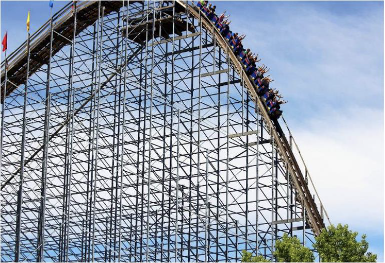
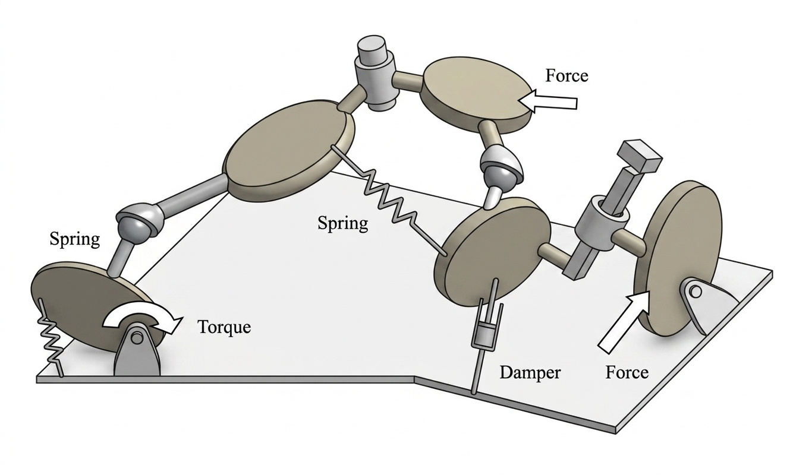

Courses at Chalmers
Athletic Intelligence in Robotics
Traditional robots (such as those used in factories) have a fixed base and are fully actuated under their operating conditions. However, modern robots inspired by animals — hoppers, quadrupeds, humanoids — are not bound to one place and are always underactuated. Like animals, these robots can perform dynamic movements, demonstrate compliance, and are robust to contact during motion. Robots of the future will move more dynamically and safely in rugged environments shared with humans. Developing such robots requires a focus on athletic intelligence.
This course provides the fundamentals of athletic intelligence in robotics to enable robust sensorimotor control. Students put this knowledge into practice through tutorials and exercise sheets using Python, robot simulations, and hardware experiments. Practical examples demonstrate how theory applies to modern systems such as Atlas (Boston Dynamics), Digit (Agility Robotics), and the Unitree Go2 quadruped.
 ▶
▶
Image Credit: Chalmers Media Team
Structural Dynamics
Vibration and noise is often an unwanted feature appearing in many technical systems. In order to reduce vibrations and their effects, a thorough knowledge is needed about the generation of vibrations, how they propagate in a structure, and how they radiate into the surroundings as sound. Many structures are constructed of simple elements such as rods, beams, plates, and shells.
The course provides knowledge of structural dynamics concepts and presents current methods for solving dynamic problems — such as response of buildings due to wind load, machine vibrations, car body vibrations, and earthquakes. The main goal is to give a solid foundation in both the basic equations that describe the motion of structural elements and computer-aided engineering within structural dynamics.

Dynamics of Multibody Systems
This doctoral course covers the foundations of multibody dynamics and its application to mechanical and robotic systems. The first part treats minimal coordinate formulations using Lie group and screw theory, covering rigid body kinematics, Newton–Euler and Lagrangian dynamics, and equations of motion for open- and closed-chain systems. The second part addresses maximal coordinate formulations, including numerical integration of DAEs and flexible body simulation. The third part covers contact mechanics, model-based control, trajectory optimisation, and optimal control for multibody systems with closed-loop kinematic chains.
